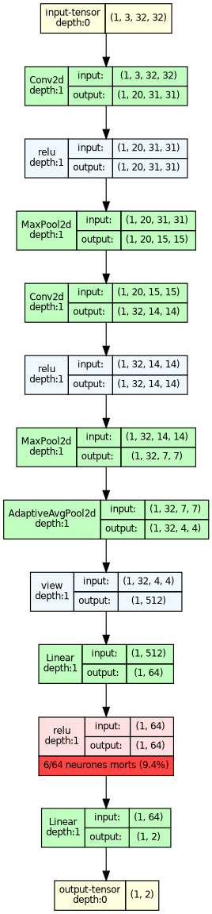

01 — Why examining dead ReLu?
ContextConvolutional neural networks are heavily over-parameterised: the number of trainable weights routinely exceeds the number of training samples, which gives them a strong tendency to memorise rather than generalise on supervised tasks such as classification. The usual remedy is data. For the empirical risk minimiser (ERM) to generalise — that is, for its true risk under the underlying distribution P to stay close to the empirical risk it was trained to minimise — one draws a training set from P large enough for the two to coincide. In medical imaging that remedy is often unavailable: ground-truth labels require expert annotation and, for endpoints such as biopsy-confirmed malignancy, are both expensive and technically difficult to obtain. When the sample size cannot be increased, the alternative is to reduce the number of parameters to what the task actually requires — parsimony instead of more data. Identifying the parts of a CNN that play no role in the task, in the sense that their ReLU output never leaves zero, is one concrete route: those branches carry weights that are trained but never used, and could in principle be removed. This is the dying ReLU problem, and it costs more than wasted capacity — a unit whose pre-activation is negative for every input receives no gradient, so it cannot recover on its own, and the network's effective learning capacity shrinks accordingly. Several recent studies analyse the phenomenon and propose ways to mitigate it or to bring the affected units back to life.
Related workWork on the dying ReLU falls into three broad families, following the taxonomy proposed by Lu et al. (2020). The first modifies the architecture, and in particular the activation function: leaky ReLU (Maas et al., 2013), ELU (Clevert et al., 2016), SELU (Klambauer et al., 2017) and searched activations (Ramachandran et al., 2017) all preserve some gradient signal on the negative side, although their relative benefit varies across tasks and datasets and each adds at least one hyper-parameter to tune. The second inserts extra operations into the training loop — batch normalisation (Ioffe and Szegedy, 2015), dropout (Srivastava et al., 2014) — at the cost of additional computation per iteration. The third leaves both the architecture and the training procedure untouched and changes only how weights and biases are initialised (Glorot and Bengio, 2010; Saxe et al., 2014; He et al., 2015; Mishkin and Matas, 2016). Lu et al. (2020) give the first theoretical treatment of the problem in this third setting. They prove that under the symmetric, zero-centred distributions used by essentially all standard schemes, the probability that a ReLU network is born dead — already a constant function at initialisation, and therefore beyond rescue by any gradient-based optimiser — converges to one as depth grows, while at fixed depth it vanishes as width grows. Death is thus a property of the architecture as much as of the initialiser, which explains both why deep narrow networks are hard to train and why the wide networks used in practice rarely collapse outright. Their proposed randomised asymmetric initialisation (RAI) draws a single, randomly chosen entry of each weight-and-bias row from a positive, asymmetric distribution and the remaining entries from a centred Gaussian, with the parameters fixed by a second-moment analysis so as not to trade the dying ReLU for exploding activations; the resulting born-dead probability is substantially lower than under He initialisation. Shin and Karniadakis (2020) move from whole-network death to the number of dead units, distinguish tentative from permanent death, and treat trainability — having few enough permanently dead units for the task at hand — as an upper bound on the success rate of training, which motivates a data-dependent initialisation. More recent work intervenes during training rather than before it: Cai et al. (2021) route the negative phase through a parallel trainable branch instead of discarding it, reconstructing units that a plain ReLU would have killed, while Horuz et al. (2025) apply surrogate gradients to inactive ReLU units (SUGAR) so that they keep receiving updates — a plug-in regulariser that leaves the architecture unchanged. What all of these approaches presuppose is that one already knows where in the network the problem is. To the best of our knowledge, no simple tool exists for visualising which parts of an architecture never activate across a full forward pass over an empirical dataset — for seeing where the dying ReLU actually occurs in a specific network, and how much of it is affected. That is our contribution.
Our contributions
02 — A generalist mapping tool
From activation to visualizationTo analyze the internal behavior of a network, data is propagated through the model. Hooks then retrieve the internal activations of the layers under study. These activations are analyzed to identify neurons that produce no positive activation across the observed examples, and this information is then linked to a visual representation of the architecture.
Building the Visualization() function
03 — Case study : SmallCNN
To validate our visualization tool on a simple architecture, we first applied it to a small convolutional neural network trained on the CIFAR-10 dataset. The visualization below highlights the distribution of active and inactive neurons across the network after inference on the dataset.

05 — Case study : GMIC model
We apply the tool to GMIC, a multiple-instance-learning CNN for high-resolution breast-cancer screening images (Shen et al., 2021), using the model and weights released in the authors' repository, nyukat/GMIC.
References
Cai, Z., Huang, K. and Peng, C. (2021). Reborn mechanism: rethinking the negative phase information flow in convolutional neural network. arXiv:2106.07026.
Clevert, D.-A., Unterthiner, T. and Hochreiter, S. (2016). Fast and accurate deep network learning by exponential linear units (ELUs). International Conference on Learning Representations (ICLR). arXiv:1511.07289.
Glorot, X. and Bengio, Y. (2010). Understanding the difficulty of training deep feedforward neural networks. Proceedings of the 13th International Conference on Artificial Intelligence and Statistics (AISTATS), 249–256.
He, K., Zhang, X., Ren, S. and Sun, J. (2015). Delving deep into rectifiers: surpassing human-level performance on ImageNet classification. IEEE International Conference on Computer Vision (ICCV), 1026–1034.
Horuz, C. C., Kasenbacher, G., Higuchi, S., Kairat, S., Stoltz, J., Pesl, M., Moser, B. A., Linse, C., Martinetz, T. and Otte, S. (2025). The resurrection of the ReLU. arXiv:2505.22074.
Ioffe, S. and Szegedy, C. (2015). Batch normalization: accelerating deep network training by reducing internal covariate shift. International Conference on Machine Learning (ICML).
Klambauer, G., Unterthiner, T., Mayr, A. and Hochreiter, S. (2017). Self-normalizing neural networks. Advances in Neural Information Processing Systems 30 (NeurIPS).
Krizhevsky, A. (2009). Learning multiple layers of features from tiny images. Technical report, University of Toronto.
Lu, L., Shin, Y., Su, Y. and Karniadakis, G. E. (2020). Dying ReLU and initialization: theory and numerical examples. Communications in Computational Physics, 28(5), 1671–1706. doi:10.4208/cicp.OA-2020-0165. arXiv:1903.06733.
Maas, A. L., Hannun, A. Y. and Ng, A. Y. (2013). Rectifier nonlinearities improve neural network acoustic models. ICML Workshop on Deep Learning for Audio, Speech and Language Processing.
Mishkin, D. and Matas, J. (2016). All you need is a good init. International Conference on Learning Representations (ICLR).
Ramachandran, P., Zoph, B. and Le, Q. V. (2017). Searching for activation functions. arXiv:1710.05941.
Saxe, A. M., McClelland, J. L. and Ganguli, S. (2014). Exact solutions to the nonlinear dynamics of learning in deep linear neural networks. International Conference on Learning Representations (ICLR).
Shen, Y., Wu, N., Phang, J., Park, J., Liu, K., Tyagi, S., Heacock, L., Kim, S. G., Moy, L., Cho, K. and Geras, K. J. (2021). An interpretable classifier for high-resolution breast cancer screening images utilizing weakly supervised localization. Medical Image Analysis, 68, 101908. doi:10.1016/j.media.2020.101908.
Shin, Y. and Karniadakis, G. E. (2020). Trainability of ReLU networks and data-dependent initialization. Journal of Machine Learning for Modeling and Computing, 1(1), 39–74. arXiv:1907.09696.
Srivastava, N., Hinton, G., Krizhevsky, A., Sutskever, I. and Salakhutdinov, R. (2014). Dropout: a simple way to prevent neural networks from overfitting. Journal of Machine Learning Research, 15(1), 1929–1958.